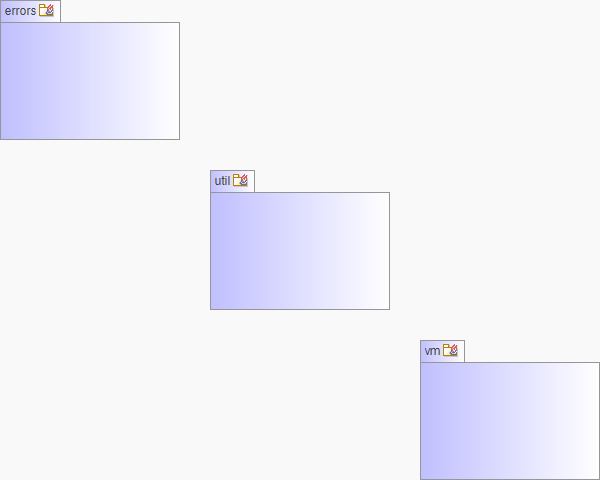

-
Class Summary Class Description AccountResource REST controller for managing the current user's account.AuditResource REST controller for getting the audit events.LogsResource Controller for view and managing Log Level at runtime.ProfileInfoResource UserResource REST controller for managing users.
Package org.measure.platform.restapi.framework.rest Description
Spring MVC REST controllers.
-
Dependency Diagram

-
Sub-Packages Diagram
